건설기계설비기사 (2016-08-21 기출문제)
1과목: 재료역학
1. 그림과 같이 수평 강체봉 AB의 한쪽을 벽에 힌지로 연결하고 죄임봉 CD로 매단 구조물이 있다. 죄임봉의 단면적은 1cm2, 허용 인장응력은 100MPa일 때 B단의 최대 안정하중은 P는 몇 kN인가?
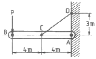
- 3
- 3.75
- 6
- 8.33
(정답률: 24%)

2. 폭 b가 일정하고 길이가 L인 4각형 단면 외팔보의 자유단에 집중하중 P가 작용하고 있다. 외팔보 내부의 최대굽힘응력을 균일하게 유지하기 위한 보의 높이 h를 벽으로부터의 거리에 x에 대한 함수로 옳게 나타낸 것은? (단, 여기서 C는 상수이다.)
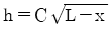
- h=C(L-x)
- h=C(L-x)2
- h=C(L-x)3
(정답률: 25%)
3. 지름 10cm, 길이 1.2m의 둥근 막댁의 일단을 고정하고 자유단을 10° 비틀었다고 하면, 막대에 생기는 최대전단응력은 약 몇 MPa인가? (단, 막대의 전단탄성계수 G=8.4 GPa이다.)
- 81
- 71
- 61
- 41
(정답률: 34%)
4. 속이 찬 원형축을 비틀 때 다음 중 어느 경우가 가장 비틀기 어려운가? (단, G는 재료의 전단탄성계수이며, 비틀림 각도와 축의 길이는 일정하다.)
- 축 지름이 크고, G의 값이 작을수록 어렵다.
- 축 지름이 작고, G의 값이 클수록 어렵다.
- 축 지름이 크고, G의 값이 클수록 어렵다.
- 축 지름이 작고, G의 값이 작을수록 어렵다.
(정답률: 36%)
5. 그림과 같이 길이가 다르고 지름이 같은 동일 재질의 강봉에 강체로 된 보가 달려 있다. 이 보가 힘 P를 받아도 힘을 받기 전과 동일하게 수평을 유지하고 있을 때 강봉 AB에 작용하는 힘은 강봉 CD에 작용하는 힘의 몇 배가 되는가? (단, G는 재료의 전단탄성계수이며, 비틀림 각도와 축의 길이는 일정하다.)
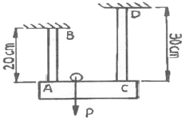
- 2.25배
- 1.67배
- 1.50배
- 1.25배
(정답률: 23%)
6. 안지름이 2m이고 1000kPa 내압이 작용하는 원통형 압력 용기의 최대 사용응력이 200MPa이다. 용기의 두께는 약 몇 mm인가? (단, 안전계수는 2이다.)
- 5
- 7.5
- 10
- 12.5
(정답률: 30%)
7. 그림과 같이 균일 분포하중을 받고 있는 돌출보의 굽힘모멘트 선도(BMD)는?
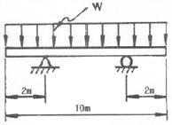
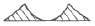
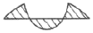
(정답률: 32%)
8. 길이가 l인 외팔보에 균일분포 하중 ω가 작용하고 있을 때 최대 처짐량은? (단, 보의 굽힘 강성 EI는 일정하고, 자중은 무시한다.)
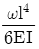
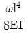
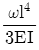
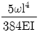
(정답률: 29%)
9. 15℃에서 양단을 고정한 둥근 막대에 발생하는 열응력이 85MPa을 넘지 않도록 하려고 할 때 온도의 허용범위는? (단, 재료의 세로탄성계수는 210GPa이고, 열팽창계수는 11.5×10-6/K이다.)
- -9.5℃~39.5℃
- -20.2℃~50.2℃
- -33.2℃~63.2℃
- -41.9℃~71.9℃
(정답률: 42%)
10. 그림과 같이 양단에서 모멘트가 작용할 경우 A지점의 처짐각은 θA는? (단, 보의 굽힘 강성 EI는 일정하고, 자중은 무시한다.)
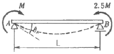
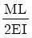
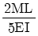
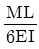
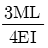
(정답률: 30%)
11. 평면 응력상태에서 σx=100MPa, σy=50MPa일 때 x방향과 y방향의 변형률 ϵx, ϵy는 약 얼마인가? (단, 이 재료의 세로탄성계수는 210GPa, 포ㅇ와송비 ν=0.3이다.)
- ϵx=202×10-6m ϵy=46×10-6
- ϵx=4⑤×10-6m ϵy=95×10-6
- ϵx=4⑤×10-6m ϵy=4⑤×10-6
- ϵx=808×10-6m ϵy=190×10-6
(정답률: 30%)
12. 50kW의 동력을 초당 10회전으로 전달하려고 한다. 이 때 축에 작용하는 토크(Nㆍm)는 약 얼마인가?
- 200Nㆍm
- 400Nㆍm
- 600Nㆍm
- 800Nㆍm
(정답률: 39%)
13. 그림과 같은 단면의 x축에 대한 단면 2차 모멘트는?
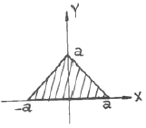
- a4
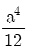
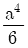
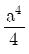
(정답률: 32%)
14. 포와송 비를 ν, 전단탄성계수를 G라 할 때, 세로탄성계수 E를 나타내는 식은?
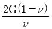
- 2G(1-ν)
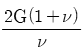
- 2G(1+ν)
(정답률: 32%)
15. 양단 회전 기둥과 일단고정 타단자유 기둥의 좌굴하중을 각각 P1 및 P2라 하면 이들의 비 P2/P1는 얼마인가? (단, 재질, 길이(L), 단면 형상 조건은 모두 동일하다고 가정한다.)
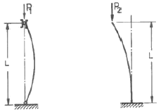
- 1/3
- 1/4
- 1/8
- 1/2
(정답률: 34%)
16. 공학적 변형률(enguineering strain) e와 진변형률(true strain) ϵ 사이의 관계식으로 맞는 것은?
- ε=ln(e+1)
- ε=e×ln(e)
- ε=ln(e)
- ε=3e
(정답률: 35%)
17. 길이가 ℓ인 양단고정보의 중앙에 집중하중 P를 받고 있을 때, C점에서의 굽힘모멘트 Mc는?
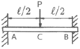
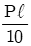
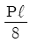
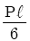
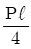
(정답률: 36%)
18. 그림과 같은 균일 단면 단순보의 일부에 균일 분포하중이 작용할 때 중앙점 C에서의 굽힘모멘트는 약 몇 kNㆍm인가? (단, 굽힘 강성 El은 일정하고, 보의 자중은 무시한다.)
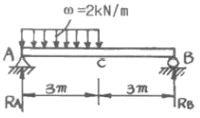
- 5
- 4.5
- 4
- 3.5
(정답률: 30%)
19. 폭이 3cm이고, 높이가 4cm인 직사각형 단면보에 수직방향으로 전단력이 800N 작용할 때 이 보 속의 최대전단응력은 몇 MPa인가?
- 0.7MPa
- 1.0MPa
- 1.3MPa
- 1.6MPa
(정답률: 31%)
20. 그림과 같은 두 개의 판재가 볼트로 체결된 채 500N의 인장력을 받고 있다. 볼트의 중간단면에 작용하는 전단응력은? (단, 볼트의 골지름은 1cm이다.)
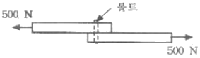
- 5.25MPa
- 6.37MPa
- 7.43MPa
- 8.76MPa
(정답률: 36%)
2과목: 기계열역학
21. 그림과 같이 선형 스프링으로 지지되는 피스톤-실린더 장치 내부에 있는 기체를 가열하여 기체의 체적이 V1에서 V2로 증가하였고, 압력은 P1에서 P2로 변화하였다. 이 때 기체가 피스톤에 행한 일은? (단, 실린더 내부의 압력(P)은 실린더 내부 부피(V)와 선형관계(P=aV, a는 상수)에 있다고 본다.)
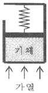
- P2V2-P1V1
- P2V2+P1V1
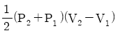
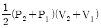
(정답률: 22%)
22. Carnot 냉동사이클에서 응축기 온도가 50℃, 증발기 온도가 -20℃이면, 냉동기의 성능계수는 얼마인가?
- 5.26
- 3.61
- 2.65
- 1.26
(정답률: 32%)
23. 온도 200℃, 압력 500kPa, 비체적 0.6m3/kg의 산소가 정압 하에서 비체적이 0.4m3/kg으로, 변화 후의 온도는 약 얼마인가?
- 42℃
- 55℃
- 315℃
- 437℃
(정답률: 30%)
24. 순수한 물질로 되어 있는 밀폐가 단열과정 중에 수행한 일의 절대값에 관련된 설명으로 옳은 것은? (단, 운동에너지와 위치에너지의 변화는 무시한다.)
- 엔탈피의 변화량과 같다.
- 내부 에너지의 변화량과 같다.
- 단열과정 중의 일은 0이 된다.
- 외부로부터 받은 열량과 같다.
(정답률: 34%)
25. 질량이 m이고 한 변의 길이가 a인 정육면체의 밀도가 ρ이면, 질량이 2m이고 한 변의 길이가 2a인 정육면체의 밀도는?
- ρ
- 1/2ρ
- 1/4ρ
- 1/8ρ
(정답률: 30%)
26. 복사열은 방사하는 방사율과 면적이 같은 2개의 방열판이 있다. 각각의 온도가 A방열판은 120℃, B 발열판은 80℃일 때 단위면적당 복사 열전달량(QA/QB)의 비는?
- 1.08
- 1.22
- 1.54
- 2.42
(정답률: 29%)
27. 체적이 150m3인 방 안에 질량이 200kg이고 온도가 20℃인 공기(이상기체상수=0.287kJ/kgㆍK)가 들어 있을 때 이 공기의 압력은 약 몇 kPa인가?
- 112
- 124
- 162
- 184
(정답률: 35%)
28. 2MPa 압력에서 작동하는 가역 보일러에 포화수가 들어가 포화증기가 되어서 나온다. 보일러의 물 1kg당 가한 열량은 약 몇 kJ인가? (단, 2MPa 압력에서 포화온도는 212.4℃이고 이 온도는 일정하다. 그리고 포화수 비엔트로피는 2.4473kJㆍK, 포화증기 비엔트로피는 6.3408kJ/kgㆍK이다.)
- 295
- 827
- 1890
- 2423
(정답률: 27%)
29. 압력이 200kPa, 체적 0.4m3인 공기가 정압하에서 체적이 0.6m3로 팽창하였다. 이 팽창중에 내부에너지가 100kJ 만큼 증가하였으면 팽창에 필요한 열량은?
- 40kJ
- 60kJ
- 140kJ
- 160kJ
(정답률: 30%)
30. 카르노 열펌프와 카르노 냉동기가 있는데, 카르노 열펌의 고열원 온도는 카르노 냉동기의 고열원 온도와 같고, 카르노 열펌프의 저열원 온도는 카르노 냉동기의 저열원 온도와 같다. 이 때 카르노 열펌프의 성적계수(COPHP)와 카르노 냉동기의 성적계수(COPHP)의 관계로 옳은 것은?
- COPHP=COPHP+1
- COPHP=COPHP-1
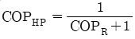
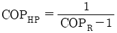
(정답률: 27%)
31. 카르노 사이클로 작동되는 열기관이 600K에서 800kJ의 열을 받아 300K에서 방출한다면 일은 약 몇 KJ인가?
- 200
- 400
- 500
- 900
(정답률: 34%)
32. 일정한 정적비열 cυ와 정압비열 cp를 가진 이상기체 1kg의 절대온도와 체적이 각각 2배로 되었을 대 엔트로피의 변화량으로 옳은 것은?
- cυln2
- cpln2
- (cp-cυ)ln2
- (cp+cυ)ln2
(정답률: 31%)
33. 다음 중 강도성 상태량(intensive property)이 아닌 것은?
- 온도
- 압력
- 체적
- 비체적
(정답률: 40%)
34. 다음 온도-엔트로피 선도(T-S)에서 과정 1-2가 가역일 때 빗금 친 부분은 무엇을 나타내는가?
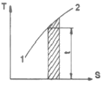
- 공업일
- 절대일
- 열량
- 내부에너지
(정답률: 32%)
35. 온도 150℃, 압력 0.5MPa의 이상기체 0.287kg이 정압과정에서 원래 체적의 2배로 늘어난다. 이 과정에서 가해진 열량은 약 얼마인가? (단, 공기의 기체 상수는 0.287kJ/kgㆍK이고, 정압 비열은 1.004kJ/kgㆍK이다.)
- 98.8kJ
- 111.8kJ
- 121.9kJ
- 134.9kJ
(정답률: 33%)
36. 다음 중 단열과정과 정적과정만으로 이루어진 사이클(cycle)은?
- Otto cycle
- Diesel cycle
- Sabathe cycle
- Rankine cycle
(정답률: 25%)
37. 그림에서 T1=561K, T2=1010Km T3=690K, T4=383K인 공기를 작동유체로 하는 브레이턴 사이클의 이론 열 효율은?
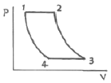
- 0.388
- 0.465
- 0.316
- 0.412
(정답률: 26%)
38. 이상기체의 압력(P), 체적(V)의 관계식 “PVn=일정”에서 가역단열과정을 나타내는 n의 과정을 나타내는 n의 값은? (단, Cp는 정압비열, Cυ는 정적비열이다.)
- 0
- 1
- 정적비열에 대한 정압비열의 비(Cp/Cυ)
- 무한대
(정답률: 33%)
39. 질량 유량이 10kg/s인 터빈에서 수증기의 엔탈피가 800kJ/kg 감소한다면 출력은 몇 kW인가? (단, 역학적 손실, 열손실은 모두 무시한다.)
- 80
- 160
- 1600
- 8000
(정답률: 32%)
40. 시스템 내의 임의의 이상기체 1kg이 채워져 있다. 이 기체의 정압비열은 1.0kJ/kgㆍK이고, 초기 온도가 50℃인 상태에서 323kJ의 열량을 가하여 팽창시킬 때 변경 후 체적은 변경 전 체적의 약 몇 배가 되는가? (단, 정압과정으로 팽창한다.)
- 1.5베
- 2배
- 2.5배
- 3배
(정답률: 27%)
3과목: 기계유체역학
41. 다음 중 차원이 잘못 표시된 것은? (단, M:질량, L:길이, T:시간)
- 압력(pressure):MLT-2
- 일(woek):ML2T-2
- 동력(power):ML2T-3
- 동점성계수(kinematic viscosity):L2T-1
(정답률: 33%)
42. 안지름 5cm, 길이 20m, 관마찰계수 0.02인 수평 원관 속을 난류로 물이 흐른다. 관출구와 입구의 압력차가 20kPa 이면 유량은 약 몇 L/s인가?
- 4.4
- 6.3
- 8.2
- 10.8
(정답률: 20%)
43. 수평 원관 내의 층류 유동에서 유량이 일정할 때 압력 강하는?
- 관의 지름에 비례한다.
- 관의 지름에 반비례한다.
- 관의 지름에 제곱에 반비례한다.
- 관의 지름에 4승에 반비례한다.
(정답률: 30%)
44. Buckingham의 파이(pi)정리를 바르게 설명한 것은? (단, k는 변수의 개수, r은 변수를 표현하는데 필요한 최소한의 기분차원의 개수이다.)
- (k-r)개의 독립적인 무차원수의 관계식으로 만들 수 있다.
- (k+r)개의 독립적인 무차원수의 관계식으로 만들 수 있다.
- (k-r+1)개의 독립적인 무차원수의 관계식으로 만들 수 있다.
- (k+r+1)개의 독립적인 무차원수의 관계식으로 만들 수 있다.
(정답률: 29%)
45. 다음 중 유량 측정과 직접적인 관련이 없는 것은?
- 오리피스(Orifice)
- 벤투리(Venturi)
- 노즐(Nozzle)
- 부르돈관(Bourdon tube)
(정답률: 30%)
46. 유량이 10m3/s로 일정하고 수심이 1m로 일정한 강의 폭이 매 10m마다 1m씩 선형적으로 좁아진다. 강 폭이 5m인 곳에서 강물의 가속도는 몇 m3/s인가? (단, 흐름 방향으로만 속도서운이 있다고 가정한다.)
- 0
- 0.02
- 0.04
- 0.08
(정답률: 8%)
47. 정상상태이고 비압축성인 2차원 유동장의 속도성분이 각가 u=kxy와 u=a2+x2-y2일 때 연속방정식을 만족하기 위한 k는? (단, u는 x 방향 속도성분이고, v는 y방향 속도성분이며, a는 상수이다.)
- 2
- 3
- 4
- 6
(정답률: 31%)
48. 그림과 같이 입구속도 Uo의 비압축성 유체의 유동이 평판 위를 지나 출구에서의 속도 분포가
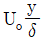
가 된다. 검사체적을 ABCD로 취한다면 단면 CD를 통과하는 유량은? (단, 그림에서 검사체적의 두께는 δ, 평판의 폭은 b이다.)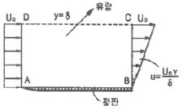
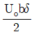
- Uobδ
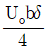
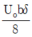
(정답률: 15%)
49. 한 변의 길이가 10m인 정육면체의 개방된 탱크에 비중 0.8의 기름이 반만 차 있을 때 탱크 밑면이 받는 압력은 계기압력으로 약 몇 kPa인가?
- 78.4
- 7.84
- 39.2
- 3.92
(정답률: 24%)
50. 그림과 같이 거대한 물탱크 하부에 마찰을 무시할 수 있는 매끄럽고 둥근 출구를 통하여 물이 유출되고 있다. 만약 출구로부터 수면까지의 수직거리 h가 4배로 증가한다면, 물의 유출속도는 몇 배 증가하겠는가?
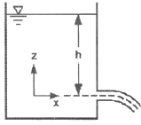
- 2
- 2√2
- 4
- 8
(정답률: 30%)
51. 그림과 같이 반지름 R인 한 쌍의 평행 원판으로 구성된 점도측정기(parallel plate viscometer)를 사용하여 액체시료의 점성계수를 측정하는 장치가 있다. 아래쪽 원판은 고정되어 있고 위쪽의 원판은 아래쪽 원판과 높이 h를 유지한 상태에서 각 속도 ω로 회전하고 있으며 갭 사이를 채운 유체의 점도응 위 평판을 정상적으로 돌리는데 필요한 토크를 측정하여 계산한다. 갭 사이의 속도 분포는 선형적이며, Newton 유체일 때, 다음 중 회전하는 원판의 밑면에 작용하는 전단응력의 크기에 대한 설명으로 맞는 것은?
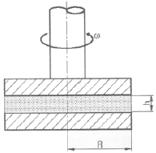
- 중심축으로부터의 거리에 관계없이 일정하다.
- 중심축으로부터의 거리에 비례하여 선형적으로 증가한다.
- 중심축으로부터의 거리의 제곱에 비례하여 증가한다.
- 중심축으로부터의 거리에 반비례하여 감소한다.
(정답률: 12%)
52. 저수지의 물을 0.⑤m3/s의 유량으로 10m 위쪽 저수지로 끌어올리는데 필요한 펌프의 동력이 7kW라면 마찰손실수두는 몇 m인가?
- 4.3
- 5.7
- 14.3
- 130
(정답률: 19%)
53. 지름 6cm의 공이 공기속을 34m/s의 속도로 비행할 때 소요 동력은 약 몇 W인가? (단, 항력계수는 0.74, 공기의 밀도는 1.23kg/m3이다.)(오류 신고가 접수된 문제입니다. 반드시 정답과 해설을 확인하시기 바랍니다.)
- 68
- 62
- 55
- 47
(정답률: 22%)
54. 수평 원관 내의 유동에 관한 설명 중 옳은 것은?
- 완전 발달한 층류유동에서 압력강하는 관 길이의 제곱에 비례한다.
- 완전 발달한 층류유동에서의 마찰계수는 관의 거칠기(조도)와는 무관하다.
- 레이놀즈 수가 매우 큰 완전난류유동에서 마찰계수는 상대조도보다는 레이놀즈 수의 영향을 크게 받는다.
- 수력학적으로 매끄러운 파이프(즉 상대조도가 0)일 경우 마찰계수는 0이 된다.
(정답률: 23%)
55. 그림과 같이 물 제트가 정지판에 수직으로 부딪힌다. 마찰을 무시할 때, 제트에 의해 정지판이 받는 힘은? (단, 물 제트의 분사속도(Vj)는 10m/s이고, 제트 단면적은 0.01m2이다.)
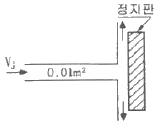
- 10kN
- 10N
- 100kN
- 1000N
(정답률: 32%)
56. 경계층에 대한 설명으로 가장 적절한 것은?
- 점성 유동 영역과 비점성 유동 영역의 경계를 이루는 층
- 층류영역과 난류영역의 경계를 이루는 층
- 정상유동과 비정상유동의 경계를 이루는 층
- 아음속 유동과 초음속 유동사이의 변화에 의하여 발생하는 층
(정답률: 21%)
57. 깊이가 10cm이고 지름이 6cm인 물 컵에 정지상태에서 7cm 높이로 물이 담겨있다. 이 컵을 회전반 위에 중심축에 올려놓고 서서히 회전속도를 증가시킬 때 물이 넘치기 시작하는 때의 회전반의 각속도는 약 몇 rad/s인가?
- 345
- 36.2
- 72.4
- 690
(정답률: 27%)
58. 원통 주위를 흐르는 비점성 유동(등류 유입 속도는 Vo)에서 원통 표면에서의 자유류 속도 최대값은?
- √2Vo
- 1.5o
- 2o
- 3o
(정답률: 24%)
59. 길이가 50m인 배가 8m/s의 속도로 진행하는 경우를 모형 배를 이용하여 조파저항에 관한 실험을 하고자 한다. 모형 배의 길이가 2m이면 모형 배의 속도는 약 몇 m/s로 하여야 하는가?
- 1.60
- 1.82
- 2.14
- 2.30
(정답률: 31%)
60. 사염화탄소를 분무하여 0.2mm 지름의 액적이 형성되었다. 액체의 표면장력은 0.026N/m일 때, 이 액적의 내외부 압력 차이는?
- 520Pa
- 52Pa
- 260Pa
- 26Pa
(정답률: 25%)
4과목: 유체기계 및 유압기기
61. 동일한 물에서 운전되는 두 개의 수차가 서로 상사법칙이 설립할 때 관계식으로 옳은 것은? (단, Q:유량, D:수차의 지름, n:회전수이다.)
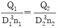
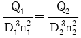
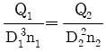
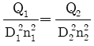
(정답률: 68%)
62. 흡입 실양정 35m, 송출 실양정 7m인 펌프장치에서 전양정은은 약 몇 m인가? (단, 손실수두는 없다.)
- 28
- 35
- 7
- 42
(정답률: 68%)
63. 축류펌프의 익형에서 종횡비(aspect ratio)란?
- 익폭과 익현의 길이의 비
- 익폭과 익 두께의 비
- 익 두께와 익의 휨량의 비
- 골결선 길이와 익폭의 비
(정답률: 83%)
64. 유회전 진공펌프(Oil-sealed rotary vacuum pump)의 종류가 아닌 것은?
- 게데(Gaede)형 진공펌프
- 너시(Nush)형 진공펌프
- 키니(Kinney)형 진공펌프
- 센코(Cenco)형 진공펌프
(정답률: 86%)
65. 토크 컨버터의 토크비, 속도비, 효율에 대한 특성 곡선과 관련한 설명 중 옳지 않은 것은?
- 스테이터(안내깃)가 있어서 최대 효율을 약 97%까지 끌어올릴 수 있다.
- 속도비 0에서 토크비가 가장 크다.
- 속도비가 증가하면 효율은 일정부분 증가하다가 다시 감소한다.
- 토크비가 1이 되는 점을 클러치 점(clutch point)이라고 한다.
(정답률: 43%)
66. 펌프에서의 서징(Surging) 발생 원인으로 거리가 먼 것은?
- 펌프의 특성곡선(H-Q곡선)이 우향상승(산형) 구배일 것
- 무단 변속기가 장착된 경우
- 배관 중에 물탱크나 공기탱크가 있는 경우
- 유량조절 밸브가 탱크의 뒤쪽에 있는 경우
(정답률: 59%)
67. 기계적 에너지를 유체 에너지(주로 압력에너지 형태)로 변환시키는 장치를 보기에서 모두 고른다면?
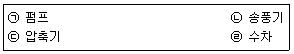
- ㉠, ㉡, ㉣
- ㉠, ㉢
- ㉠, ㉡, ㉢
- ㉢, ㉣
(정답률: 74%)
68. 일반적으로 압력상승의 정도에 따라 송풍기와 압축기로 분류되는데 다음 중 압축기의 압력 범위는?
- 0.1kgf/cm2 이하
- 0.1kgf/cm2~0.5kgf/cm2 이하
- 0.5kgf/cm2~0.9kgf/cm2 이하
- 1.0kgf/cm2 이상
(정답률: 69%)
69. 수차에서 낙차 및 안내깃의 개도 등 유량의 가감장치를 일정하게 하여 수차의 부하를 감소시키면 정격 회전 속도 이상으로 속도가 상승하게 되는데 이 속도를 무엇이라고 하는가?
- bypass speed
- specific speed
- discharge limit speed
- run away speed
(정답률: 59%)
70. 수차의 분류에 있어서 다음 중 반동 수차에 속하지 않는 것은?
- 프란시스 수차
- 카플란 수차
- 펠톤 수차
- 톰린 수차
(정답률: 68%)
71. 유압 펌프가 기름을 토출하지 않고 있을 때 검사해야 할 사항으로 거리가 먼 것은?
- 펌프의 회전 방향을 확인한다.
- 릴리프 밸브의 설정압력이 올바른지 확인한다.
- 석션 스트레이너가 막혀 있는지 확인한다.
- 펌프 축이 파손되지 않았는지 확인한다.
(정답률: 53%)
72. 다음 중 일반적으로 가장 높은 압력을 생성할 수 있는 펌프는?
- 베인 펌프
- 기어 펌프
- 스크루 펌프
- 피스톤 펌프
(정답률: 75%)
73. 기어 펌프에서 1회전당 이송체적이 3.5cm3/rev이고 펌프의 회전수가 1200rpm일 때 펌프의 이론 토출량은? (단, 효율은 무시한다.)
- 3.5L/min
- 35L/min
- 4.2L/min
- 42L/min
(정답률: 68%)
74. 유압 실린더에서 오일에 의해 피스톤에 15MPa의 압력이 가해지고 피스톤 속도가 3.5cm/s일 때 이 실린더에서 발생하는 동력은 약 몇 kW인가? (단, 실린더 안지름은 100mm이다.)
- 2.88
- 4.12
- 6.68
- 9.95
(정답률: 60%)
75. 유압 실린더의 마운팅(mounting) 구조 중 실린더 튜브에 축과 직각방향으로 피벗(pivot)을 만들어 실린더가 그것을 중심으로 회전할 수 있는 구조는?
- 풋 형(foot mounting type)
- 트러니언 형(tunnion mounting type)
- 플랜지 형(flange mounting type)
- 클레비스 형(clevis mounting type)
(정답률: 44%)
76. 펌프의 효율과 관련하여 이론적인 펌프의 토출량(L/min)에 대한 실제 토출량(L/min)의 비를 의미하는 것은?
- 용적 효율
- 기계 효율
- 전 효율
- 압력 효율
(정답률: 65%)
77. 그림은 조작단이 일을 하지 않을 때 작동유를 탱크로 귀환시켜 무부하 운전을 하기 위한 무부하 회로의 일부이다. 이 때 A 위치에 어떤 방향제어밸브를 사용해야 하는가?
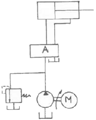
- 클로즈드 센터형 3위치 4포트 밸브
- 텐덤 센터형 3위치 4포트 밸브
- 오픈 센터형 3위치 4포트 밸브
- 세미 오픈 센터형 3위치 4포트 밸브
(정답률: 77%)
78. 액추에이터의 공급 쪽 관로에 설정된 바이패스 관로의 흐름을 제어함으로써 속도를 제어하는 회오는?
- 미터 인 회로
- 미터 아웃 회로
- 어큐물레이터 회로
- 블리드 오프 회로
(정답률: 70%)
79. 부하의 낙하를 방지하기 위해서 배압을 유지하는 압력 제어 밸브는?
- 카운터 밸런스 밸브(counter balance valve)
- 감압 밸브(pressure-reducing valve)
- 시퀀스 밸브(sequence valve)
- 언로딩 밸브(unloading valve)
(정답률: 84%)
80. 유압기기 중 작동유가 가지고 있는 에너지를 잠시 저축했다가 사용하며, 이것을 이용하여 갑작스런 충격 압력에 대한 완충작용도 할 수 있는 것은?
- 어큐물레이터
- 글랜드 패킹
- 스테이터
- 토크 컨버터
(정답률: 86%)
5과목: 건설기계일반 및 플랜트배관
81. 모형을 가용성의 재료로 만들고 이것에 슬러리 상태의 주형 재료를 피복하여 외형을 만든 다음 모형을 용융시켜 제거하고, 용탕을 주입하는 방법으로 로스트 왁스법이라고도 하는 주조법은?
- 다이캐스팅
- 원심 주조법
- 이산화탄소법
- 인베스트먼트법
(정답률: 54%)
82. 측정대상과 독립적으로 크기를 조정할 수 있는 표준량을 표준기로 사용하여, 표준량을 미지의 측정량에 합치시킴으로써, 그 표준량의 크기로 측정치를 구하는 방법은?
- 보상법
- 영위법
- 치환법
- 편위법
(정답률: 44%)
83. 압연가공에서 압하율을 구하는 식으로 옳은 것은? (단, 롤러 통과 전 소재두께 : Ho, 롤러 통과 후 소재 두께 : H1)
(정답률: 55%)
84. 다음 피복아크 용접봉 중 내균열성이 가장 우수한 용접봉은?
- E 4303
- E 4311
- E 4316
- E 4327
(정답률: 29%)
85. 공구재료의 구비조건 중 틀린 것은?
- 인성이 작을 것
- 고온경도가 클 것
- 내마멸성이 클 것
- 마찰계수가 작을 것
(정답률: 38%)
86. 방전가공의 특징으로 틀린 것은?
- 무인가공이 불가능하다.
- 가공 부분에 변질층이 남는다.
- 전극의 형상대로 정밀하게 가공할 수 있다.
- 가공물의 경도와 관계없이 가공이 가능하다.
(정답률: 37%)
87. 선반가공에서 선반의 이송을 나타내는 단위는?
- m/mim
- min/m
- mm/rev
- rev/mm
(정답률: 46%)
88. 두께 2.5mm, 지름 50mm인 원형 동판을 블랭킹 하는데 필요한 최소 펀치력(전단하중)은 약 몇 kN인가? (단, 동판의 전단저항을 250MPa이라 한다.)
- 34.6
- 72.1
- 98.2
- 185.6
(정답률: 40%)
89. 정밀입자가공인 래핑에서 사용되는 래핑입자의 종류가 아닌 것은?
- 탄화규소
- 탄화붕소
- 탄질화티탄
- 산화알루미나
(정답률: 34%)
90. 경화된 강 중의 잔류 오스테나이트를 마텐자이트화 시키는 것으로 공구강의 경도 증가 및 성능을 향상하도록 0℃ 이하의 온도, 즉 심랭온도에서 냉각시키는 열처리 방법은?
- 고온 뜨임
- 뜨임 경화
- 저온 뜨임
- 세브제로 처리
(정답률: 50%)
91. 건설장비 중 롤러(Roller)에 관한 설명으로 틀린 것은?
- 앞바퀴와 뒷바퀴가 각각 1개씩 일직선으로 되어 있는 롤러를 머캠덤 롤러라고 한다.
- 탬핑 롤러는 댐의 축제공사와 제방, 도로, 비행장 등의 다짐작업에 쓰인다.
- 진동 롤러는 조종사가 진동에 따른 피로감으로 인해 장시간 작업을 하기 힘들다.
- 타이어 롤러는 공기타이어의 특성을 이용한 것으로, 탠덤 롤러에 비하여 기동성이 좋다.
(정답률: 62%)
92. 건설기계에서 사용하는 브레이크 라이닝의 구비조건으로 틀린 것은?
- 마찰계수가 작을 것
- 페이드(fade) 현상에 견딜 수 있을 것
- 불쾌음의 발생이 없을 것
- 내마모성이 우수할 것
(정답률: 82%)
93. 공기압축기의 규격을 표시하는 단위는?
- m3/min
- mm
- kW
- L
(정답률: 74%)
94. 플랜트 기계설비에서 액체형 물질을 운반하기 위한 파이프 재질 선정 시 고려할 사항으로 거리가 먼 것은?
- 유체의 온도
- 유체의 압력
- 유체의 화학적 성질
- 유체의 압축성
(정답률: 75%)
95. 모터 그레이더에서 회전반경을 작게 하여 선회가 용이하도록 하기 위한 장치는?
- 리닝 장치
- 아티큘레이트 장치
- 스캐리 파이어 장치
- 피드 호퍼 장치
(정답률: 73%)
96. 무한궤도식 굴삭기는 최대 몇 % 구배의 지면을 등판할 수 있는 능력이 있어야 하는가?
- 15%
- 20%
- 25%
- 30%
(정답률: 48%)
97. 진동 해머(vibro hammer)에 대한 설명으로 틀린 것은?
- 말뚝에 진동을 가하여 말뚝의 주변 마찰을 경감함과 동시에 말뚝의 자중과 해머의 중량에 의해 항타한다.
- 단면적이 큰 말뚝과 같이 선단의 관입저항이 큰 경우에도 효율적으로 사용할 수 있다.
- 진동 해모의 규격은 모터의 출력(kW)이나 기전력(t)으로 표시한다.
- 크레인에 부착하여 사용할 경우 크레인 손상을 방지하기 위하여 완충장치를 사용한다.
(정답률: 60%)
98. 불도저가 30m 떨어진 곳에 흙을 운반할 때 사이클 시간(Cm)은 약 얼마인가? (단, 전진속도응 2.4km/h, 후진속도는 3.6km/h, 변속에 요하는 시간은 12초이다.)
- 1분 15초
- 1분 20초
- 1분 27초
- 1분 36초
(정답률: 70%)
99. 건설기계관리법에 따라 정기검사를 하는 경우 관련 규정에 의한 시설을 갖춘 검사소에서 검사를 해야 하나 특정 경우에 검사소가 아닌 그 건설기계가 위치한 장소에서 검사를 할 수 있다. 다음 중 그 경우에 해당하지 않는 것은?
- 최고속도가 35km/h 이상인 경우
- 도서지역에있는 경우
- 너비가 2.5미터를 초과하는 경우
- 자체중량이 40톤을 초과하거나 축중이 10톤을 초과하는 경우
(정답률: 65%)
100. 로더 버킷의 전경각과 후경각 기준으로 옳은 것은? (단, 로더의 출입물은 차량 옆면에서 설치되어 있고, 적재물 배출장치는 이젝터는 없다,)
- 전경각은 30도 이상. 후각은 25도 이상
- 전경각은 45도 이상. 후각은 35도 이상
- 전경각은 30도이하. 후각은 25도 이하
- 전경각은 45도이하. 후각은 35도 이하
(정답률: 49%)
CD의 인장력은 P에 비례하므로, CD의 인장응력도 P에 비례합니다. 따라서 CD의 인장응력은 P를 최대화하는 것이 최대 안정하중을 구하는 것과 같습니다.
CD의 인장응력은 인장력을 단면적으로 나눈 것과 같습니다. 따라서 CD의 인장응력은 P/1cm2 = P/100mm2입니다.
허용 인장응력이 100MPa이므로, CD의 인장응력이 100MPa가 되면 안정성이 떨어집니다. 따라서 다음 식이 성립합니다.
P/100mm2 ≤ 100MPa
P ≤ 100MPa × 100mm2 = 10kN
하지만, 이 값은 CD가 끊어지는 최대 하중이므로, 이 값보다 작은 값 중에서 최대값을 찾아야 합니다. 이 값은 AB의 중심에서 CD까지의 거리가 최대가 되는 경우입니다. 이 거리는 AB의 길이의 절반인 500mm입니다.
따라서, P ≤ 100MPa × 100mm2 × 500mm = 5kN × 10mm = 50kN × 1mm = 50kN/mm = 50kN/1000N = 50N
즉, 최대 안정하중은 50kN 또는 5,000N입니다. 이 값은 보기 중에서 "3"에 해당합니다.